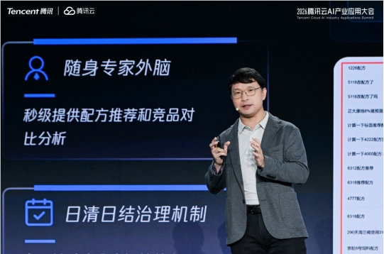

Dialogue with Wang Qibin of Lingchu AI: "Manipulation Is the Crown Jewel; Mobility Merely the Admission Ticket"
A two-year outlook on the embodied intelligence industry and Lingchu's targeted full-stack wager.
In 2026, a growing number of companies on the embodied intelligence track are contemplating mid-course pivots.
From humanoid to wheeled platforms, from logistics to domestic settings, numerous startups are oscillating between technical routes and use-case selections — as though the first to pivot survives. Against this backdrop, AI Tech Review set out to identify the "conviction players" in the embodied track.
Lingchu AI came into focus.
Over the past 18 months, Lingchu AI has raised more than RMB 2 billion, drawing intensive state-backed capital and posting a six- to sevenfold valuation increase in a single year. On May 7, 2026, Morgan Stanley published "Humanoid Horizons: Money Meets Machines," citing Lingchu AI as a core constituent of the "Brain" segment in its China Humanoid Robot Value Chain mapping.
Beyond the spotlight on post-00s prodigy Chen Yuanpei, Lingchu AI possesses a far rarer attribute: it has, from inception, committed to a wheeled chassis paired with dual-arm general-purpose dexterous manipulation.
Persistence in dexterous manipulation — such conviction is exceedingly scarce in today's embodied landscape. This resolve stems from the judgment of Lingchu AI founder and CEO Wang Qibin, with whom we discussed his view of the sector.
Wang Qibin's career arc spans BlackBerry smartphones, Sonos speakers, indoor delivery robots at Yunjie Technology, and L4 autonomous vehicles at JD.com, culminating in the founding of Lingchu AI in September 2024. "When I chose robotics in 2018, I sought a decade-long runway," Wang said. "But the industry has evolved faster than I anticipated." Amid the churn, he has maintained that manipulation is the crown jewel and mobility merely the ticket to entry.
In this dialogue, he shares the realities of building a startup in the embodied space, the truth behind the data flywheel, the existential imperatives of the embodied brain, and his view of the industry's terminal state.
Below is an edited transcript of AI Tech Review's conversation with Wang Qibin:
01
Manipulation Is the Crown Jewel; Mobility Merely the Ticket to Entry
▎ AI Tech Review: Your career progressed from BlackBerry smartphones to Sonos speakers, Yunjie Technology, and JD autonomous vehicles, culminating in Lingchu in 2024 — a trajectory spanning consumer electronics, mobile robotics, and embodied intelligence. Why, in 2018, were you so certain that robotics was the next decade-defining track?
Wang Qibin: After returning from George Washington University in 2008, my first decade was spent in consumer products. At BlackBerry, I witnessed the smartphone inflection point. Later at Sonos, I worked on the world's first smart WiFi speaker. In those years, I served primarily as a product leader for global companies across Greater China.
Around 2010, mobile internet was ascending. Smartphones, armed with extensive sensors and cloud platforms, unleashed edge-computing capabilities and spawned the app ecosystem. Speakers represented a smaller wave — the industry pursued Voice VUI, but NLP remained nascent. Contemplating the next terminal form factor, I found robots — a mobile terminal — compelling.
I joined Yunjie Technology in 2018, when the industry was building mobility capabilities on SLAM technology. At JD, I worked on L4 autonomous vehicles, extending operations from indoor to outdoor three-dimensional spaces. By late 2020, following ChatGPT's emergence, we anticipated continuous model iteration and new opportunities in embodied intelligence. Lingchu was founded in 2024 with manipulation as the singular focus — humanoid form was never the priority.
▎ AI Tech Review: In 2024, the industry was converging on humanoid robots. Why did Lingchu opt for a wheeled chassis with dual arms?
Wang Qibin: While preparing the fundraising pitch deck in 2024, we charted the competitive landscape across mobility and manipulation capability. Incumbents such as Yunjie and Gaussian Robotics focused on mobility; the embodied wave, led by Tesla and Unitree, pursued "mobility + humanoid." Lingchu positioned itself on "mobility + dual-hand manipulation."
Any mobile robot incapable of closing the loop on task execution will never address the most critical component of customer requirements. This was the single greatest lesson from Yunjie and JD. We extended robotic mobility from hotel corridors to urban roads and from indoor to outdoor environments. Yet without the ability to finish the final step with its hands, the task remains "transported" rather than "accomplished." Thus, as early as October 2024, we concluded that the mainstream solution would be wheeled with dual arms — manipulation value far exceeds mobility.
That judgment remains unchanged.
02
Our Grasp of Data Is Deep;
Plain uses 'Struggles to Power the Next Steps'; Wall Street uses 'Alone Cannot Drive Subsequent Progress' for stronger, more definitive language.
▎ AI Tech Review: At last year's World Artificial Intelligence Conference, you showcased long-horizon tasks — mahjong and supermarket packing — achieving high success rates. Yet with the April release of Psi-R2 and Psi-W0, the technical trajectory appears to have moved from VLA toward a world model. What drove this shift?
Wang Qibin: Lingchu was the first in China to pursue long-horizon dexterous manipulation. Last year's demonstrations — mahjong and supermarket packing — involved semantic-level understanding and planning, primarily via the language modality. This year, however, we determined that the world model offers material advantages for integrating human data and performing spatiotemporal task reasoning.
Psi-R2, released this April, is a policy model that learns "how to execute a given task"; Psi-W0 is an Action-Conditioned World Model (AC-WM) that simulates "how alternative actions would play out." During Psi-W0 training, roughly 30% failure samples were incorporated, enabling the model to internalize not only successful trajectories but also how failures unfold.

▎ AI Tech Review: Architecturally, how does the Psi series relate to the earlier VLA framework? Does it replace or absorb it?
Wang Qibin: It primarily replaces the legacy VLA architecture. In terms of input and output, however, they are interactive by nature — inputs encompass video, language, and robot state; outputs encompass robot actions and future-state predictions. Our current architecture is built on a World Action Model (WAM) pre-trained on 100,000 hours of human data, a route that is coalescing as industry consensus.
▎ AI Tech Review: How was the 100,000 hours of human data gathered? The industry ecosystem includes simulation data, teleoperation data, and UMI gripper data. Why did Lingchu insist on developing proprietary gloves to capture five-finger human hand data?
Wang Qibin: Starting in the second half of last year, we have been developing wearable multimodal data gloves and constructed a data factory in Beijing. The gloves capture visual, tactile, and joint-angle data, achieving sub-millimeter 3D trajectory accuracy.

This is where data insight becomes critical. Human data forms a pyramid: pure first-person video is occlusion-prone, and multi-camera arrays are difficult to deploy in real-world settings. More critically, pure video data lacks adequate precision. Some claim video alone achieves millimeter-level accuracy, but that holds primarily for static or slow movements. Manipulation involves numerous high-frequency, fast-paced motions — how can a video-based approach maintain millimeter-level precision under those dynamics?
By incorporating joint-angle and tactile data, we achieved sub-millimeter precision. Models trained on this data demonstrate substantially enhanced emergent capabilities. Consider folding a paper box — each fold produces a different deformation; handling phone-box hinges versus a microwave — the base model's performance diverges markedly.
▎ AI Tech Review: And cost? 100,000 hours sounds expensive.
Wang Qibin: The all-in cost of glove-based collection can be reduced to one-tenth that of physical robot teleoperation. We plan to introduce a portable crowdsourced version to drive costs lower. This year and next, the data-collection system — including cloud services — represents a significant commercial vector for Lingchu.

03
Building Both Models and Complete Systems —
A Necessity, Not a Choice
▎ AI Tech Review: Lingchu positions itself as a general-purpose dexterous manipulation model company. Yet you also built the complete PsiBot V1 system. Many peers pursue either pure algorithmic licensing or pure hardware. What was the rationale?
Wang Qibin: We call it a "targeted full stack." We don't develop mobility or core components, but we handle complete system design and full-stack software. This choice was imposed by circumstance. When we purchased off-the-shelf systems, we discovered that the underlying software was closed, and the control interfaces were incompatible with our reinforcement learning workflows — rendering system-level optimization all but impossible.
Embodied models and language models are fundamentally different animals. Language models run on standardized server hardware with a unified underlying stack. Embodied models, by contrast, must directly actuate the physical world, with a vast dynamics gap between the algorithm and the physical robot. Each robot's joint configuration, sensor distribution, and mass-inertia profile is unique. In this industry, even building a dedicated, deeply integrated system — akin to the iPhone model — is immensely difficult, let alone adapting a single foundation model across hundreds of heterogeneous hardware forms in the manner of Android. Over a one- to two-year horizon, I am deeply bearish on pure algorithmic licensing.
▎ AI Tech Review: But building a complete system is capital-intensive.
Wang Qibin: Hardware is custom-designed and outsourced for manufacturing; software is fully developed in-house. Because we originate from model training, we possess deep data insight — we understand why pure video data falls short for downstream tasks. This is Lingchu's core identity. We anchor as a general-purpose dexterous manipulation model company. Training models demands a command of data collection; data collection, in turn, yields full visibility into hardware requirements.
▎ AI Tech Review: How do you assess the embodied intelligence market in the first half of this year? Shipments appear increasingly concentrated among the leaders. How should a company carve out its position in this sector?
Wang Qibin: Concentration of shipments signals that the industry has entered its closing rounds. The current contest, however, remains fundamentally a full-stack competition — pitting systems against one another on success rate, cycle time, and sustained stability over a full workday. Models, data, and hardware morphology are still deeply interlinked; no player has decoupled them yet.
This is why we maintain the "targeted full stack" approach. Lingchu is, at its core, a general-purpose dexterous manipulation model company — but one that must possess thorough hardware visibility. Because we train our own models, we understand why pure video data falls short and why sub-millimeter joint-angle and tactile data are essential. The reverse also holds: data collection provides clear direction for hardware evolution. Looking back from 2026, many hardware-strong teams conspicuously lack the training-derived intuition on the model and data fronts.
I anticipate that this "full-stack imperative" will persist for roughly another two years. Thereafter, the industry will gradually stratify: dedicated OEMs, motion-control specialists, and manipulation-model-plus-integration players will each claim a niche. At that point, Lingchu's position will be unambiguous: a general-purpose dexterous manipulation model company, wielding end-to-end capabilities from data collection to model training, exclusively focused on the wheeled-plus-dual-arm form factor, with manipulation as the single mission.

04
Home-Scene Generalization Is Prohibitively Difficult;
Industrial Lines Are Too Fast — We Stake Out the Middle Ground
▎ AI Tech Review: Why is Lingchu avoiding home scenarios? Many startups are rushing into that space this year.
Wang Qibin: Home scenarios demand the highest generalization, though pace can be slow. Industrial assembly lines demand the least generalization, but cycle times are fastest. We elected the middle ground: logistics, retail, and service environments — moderate on both generalization and cycle time. True general home capability remains a significant challenge and warrants granular examination. We are also evaluating 3C and automotive use cases, but the cycle-time math on pure assembly lines is difficult to justify.
▎ AI Tech Review: Since early this year, numerous autonomous-driving companies have pivoted into embodied intelligence. Relative to your L4 timeline, they are roughly two years behind. What embodied-specific lessons would you share with them?
Wang Qibin: Autonomous driving commands a larger market, but embodied intelligence is more complex by an order of magnitude. The core of autonomous driving is navigating a machine through a structured environment — hotel corridors or city streets alike. For those migrating from autonomous driving, the most entrenched assumption is, "Chassis and perception are solved; embodied is just bolting on a robotic arm." That cognitive trap is profound.
An automobile's steer-by-wire chassis is relatively standardized: a single platform scales to hundreds of thousands of units, with fixed sensor configurations, mass-inertia profiles, and control interfaces. Embodied intelligence confronts an entirely different physical regime in the upper body. A single dexterous hand contains more than twenty degrees of freedom; dual-arm coordination paired with a wheeled chassis yields fifty to sixty degrees of freedom system-wide. The model honed on autonomous driving handles road-surface prediction and trajectory planning. In embodied intelligence, the challenge shifts to soft-body deformation, hinge articulation, and contact-force control — dynamics gaps that dwarf the variance between vehicle models by an order of magnitude.
▎ AI Tech Review: Reflections and recommendations?
First reflection: do not underestimate the gulf between "mobility intelligence" and "manipulation intelligence." The data pipelines, simulation tooling, and fleet operations built for autonomous driving are partially transferable — but the complexity of physical interaction is categorically different. Lingchu began developing multimodal data gloves last year precisely because we recognized that pure vision data is fundamentally inadequate for dynamic manipulation precision. A self-driving camera resolves lane markings 100 meters away; a robot folding a paper box requires sub-millimeter joint-angle and tactile feedback — two entirely separate data paradigms.
Second reflection: the ruthlessness of the time window. By the time I joined JD's autonomous-vehicle effort, the L4 delivery war had largely concluded — the competitive landscape was already drawn. The embodied intelligence wave is different. It is still nascent, yet its window is narrower than that of autonomous driving. Large models erupted with startling speed. In 2024, the industry debated VLA architectures; by 2025, the contest had shifted to world models and human data. Adopting an autonomous-driving cycle rhythm — two years refining hardware, followed by two years on algorithms — risks arriving with a ready machine only to find the model paradigm has cycled twice.
Third, and most direct: resist the temptation to build a general-purpose platform from the outset. In embodied intelligence, model-hardware coupling depth far surpasses that of autonomous driving. Lingchu's choice of the "targeted full stack" — wheeled plus dual arms exclusively, no core-component development, but full ownership of system design and low-level software — was specifically made to enable rapid reinforcement learning validation cycles.
The advice, then: identify a narrow entry point and go deep. Autonomous driving's market logic is winner-takes-all — roads are standardized. Embodied intelligence's logic is vertical depth: closing the loop on a single hardware morphology and a single manipulation-task category is far more pragmatic than aspiring to be "the Android for all robots." Manipulation is the crown jewel of embodied intelligence; mobility is merely the admission ticket. On the manipulation front, industrial customer deployments will soon deliver tangible validation.
▎ AI Tech Review: What are Lingchu's plans for the remainder of this year?
Wang Qibin: In June or July, we will release a model trained on several hundred thousand hours of data, targeting longer-horizon and more generalized tasks. By year-end, we aim to achieve language-driven control comparable to the π0.7 level — issuing a coarse natural language instruction for the robot to execute extended tasks, including emergent skill combinations in previously unseen environments. This serves both as a technical demonstration and a response to genuine industrial demand: enabling operation by non-specialists.